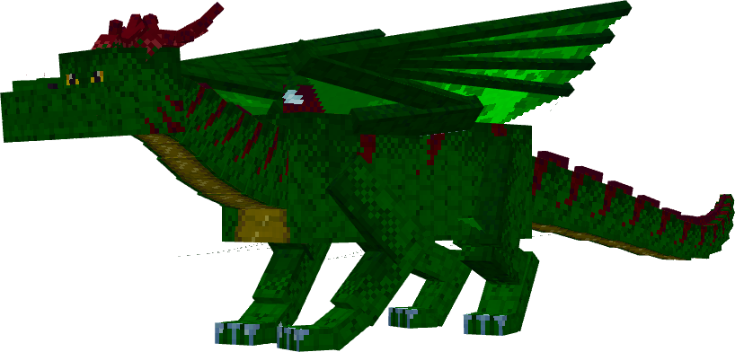
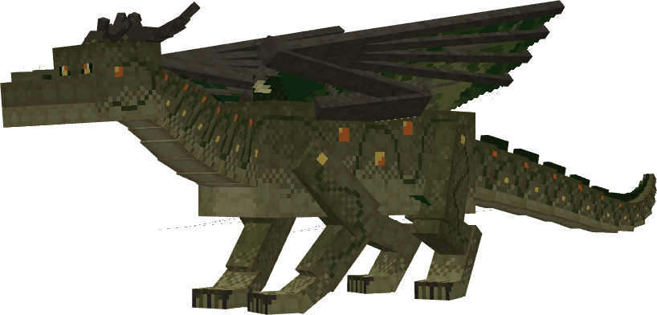
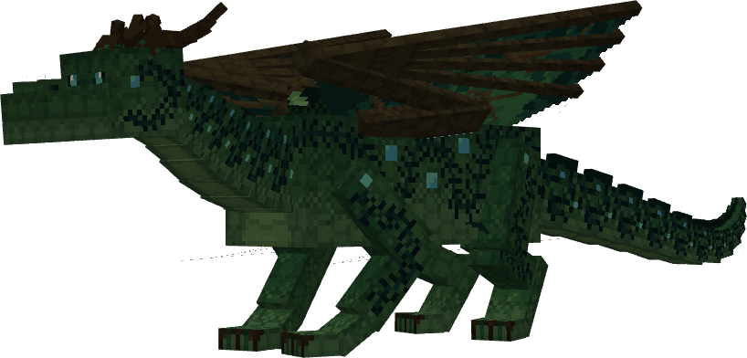
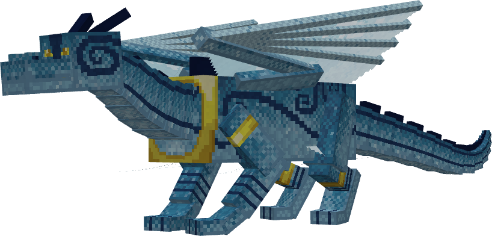
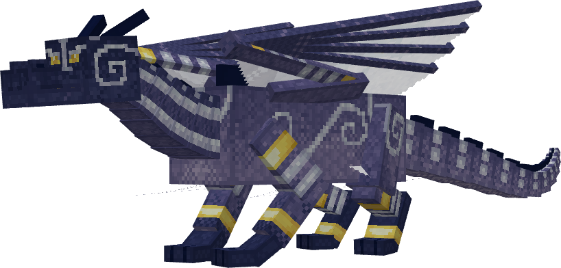
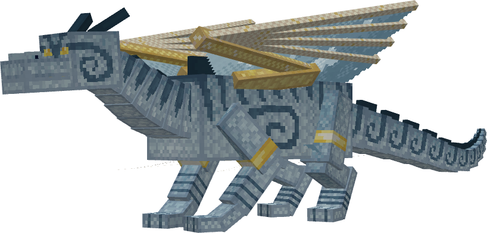

#Forest Dragon
The Forest Dragon is first in this guide. Its supplied artwork includes four appearances; gameplay details are not documented here yet.




This first profile focuses on the provided model renders. Ride, breeding and other gameplay details remain to be confirmed.
#Aether Dragon
The Aether Dragon is shown here with the three supplied appearances. Gameplay details are not documented here yet.



This profile focuses on the provided model renders. Ride, breeding and other gameplay details remain to be confirmed.
#Compare the dragons
Where a cell says "Not covered yet", this guide does not have that detail for the dragon.
| Forest | Aether | Fire | Ice | Light | |
|---|---|---|---|---|---|
| Rideable | Not covered yet | Not covered yet | Yes | Yes | Not covered yet |
| Takeoff | Not covered yet | Not covered yet | Fast | Not covered yet | Not covered yet |
| Theme | Forest | Aether | Fire | Ice | Light |
| Cross breeds with | Not covered yet | Not covered yet | Ice Dragon | Fire Dragon | Not covered yet |
| Added in | Not covered yet | Not covered yet | Before 2.0 | Before 2.0 | Update 2.0 Drop 1 |
| Texture variants | Forest Base, Jungle, Dry, Cold | Normal, Breeze, Wind | Not covered yet | Not covered yet | Not covered yet |
| Related items | Not covered yet | Not covered yet | Not covered yet | Not covered yet | Light Dragon Scales, Light Feather Armor |
#Fire Dragon
A fire-themed dragon with a fast takeoff. It is rideable, and it can cross breed with the Ice Dragon. Fire dragons come from Fire eggs, and a Fire egg is what you get when a Fire dragon starts the breeding.
How to take off · Breed a Fire egg
#Ice Dragon
A rideable dragon with ice visuals. It can cross breed with the Fire Dragon, and you get an Ice egg when the Ice dragon starts the breeding.
How to take off · Breed an Ice egg
#Light Dragon
The newest dragon, added in Update 2.0 Drop 1. It has its own gear: Light Dragon Scales and Light Feather Armor.
This guide does not yet cover whether the Light Dragon can be ridden or bred. Fire and Ice are the documented rideable dragons.
#Growth stages
Every dragon grows through three stages. Use the Baby, Juvenile and Adult buttons in the preview card to see the size difference.
- Baby
- Juvenile
- Adult
Dragon collars are available for your dragons.
#Other creatures
The Update 2.0 Drop 1 changelog also lists a Dragon Keeper, along with baby and zombie variants. Dragons got new audio, updated textures and a rebuilt set of animations as well.